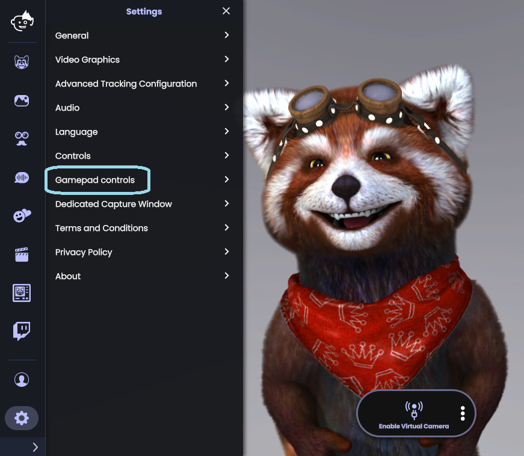
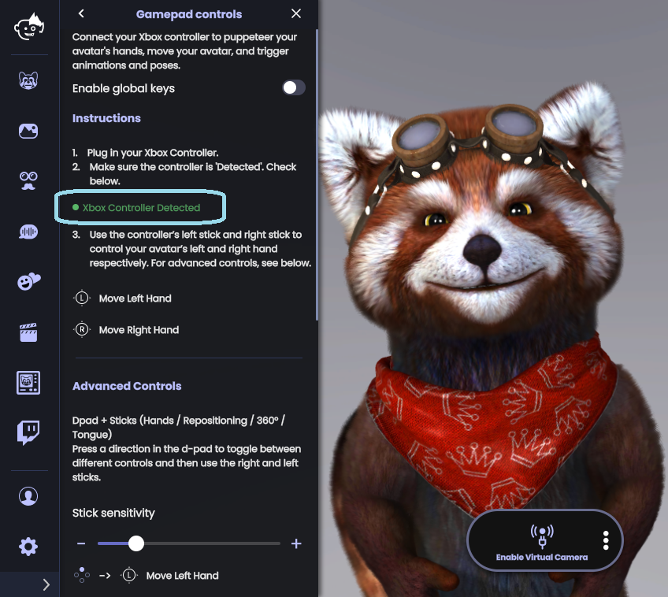
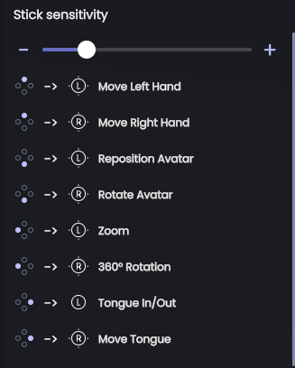
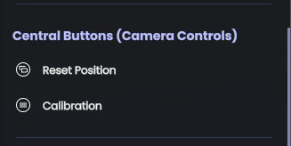
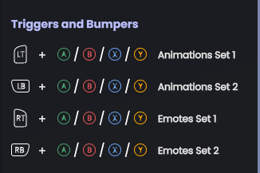

Animaze Desktop: How can I use Gamepad Controls with Animaze?
You can now control the avatar’s hands, tongue, you can rotate the avatar and reposition it in the scene and trigger special actions and poses all through your controller. To do so follow the steps bellow:
Start by connecting your controller to your PC. Once everything is running smoothly, launch the Animaze app and go to Settings > Gamepad controls

Make sure that your controller is detected in the Animaze app by checking its status in the Gamepad controls drawer menu

The left and right sticks of your controller will move the avatar’s left and right arm respectively
This feature also provides with some Advanced Controls:
a. The Stick sensitivity slider lets you increase or decrease the sensitivity of the left and right sticks
b. The D-pad buttons change the role of the left and right sticks
c. Press on the down D-pad to switch the left stick to reposition the avatar, and the right stick to rotate the avatar
d. Press the left button on the D-pad to switch the left stick to zoom in the avatar, and the right stick to rotate the avatar around the scene
e. Press the right button on the D-pad to switch the left stick to Tongue In / Out control, and the right stick to move the avatar’s tongue
f. Press up on the D-pad to switch the left and right stick to control the avatar’s left and right arm

The Central Buttons (Camera Controls) of the controller can be used as such:
a. The Start button on your controller will bring up the Calibration screen
b. The Back button on your controller will reset the avatar’s position in the scene

The Triggers and Bumpers can be used as such:
a. Use LT + A, B, X, Y and LB + A, B, X, Y to trigger the avatar’s animations
b. Use RT + A, B, X, Y and RB + A, B, X, Y to trigger the avatar’s emotes
